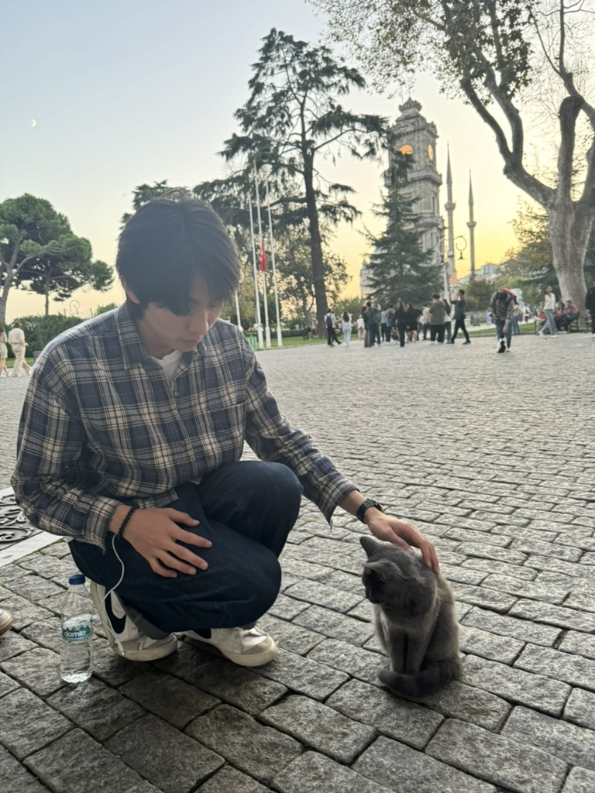

I'm a Fellow at the Gates Foundation, part of the Global Health Office of the President. My focus is on AI safety, AI evaluation, and human-agentic tooling.
I'm currently based in NYC and completed my undergraduate studies in Computer Science at New York University.
